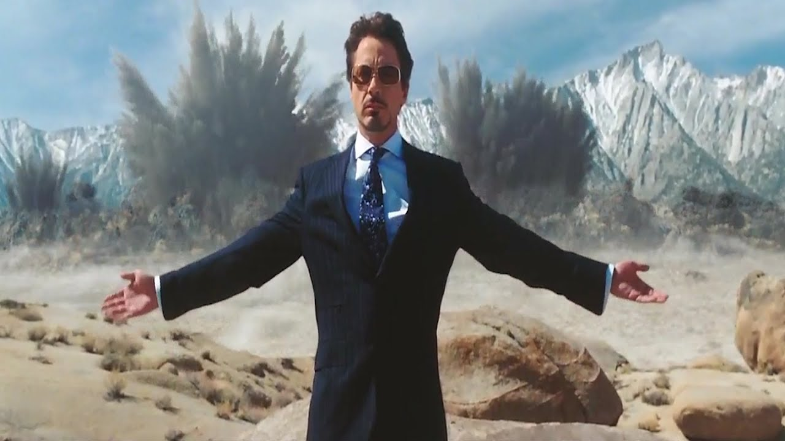
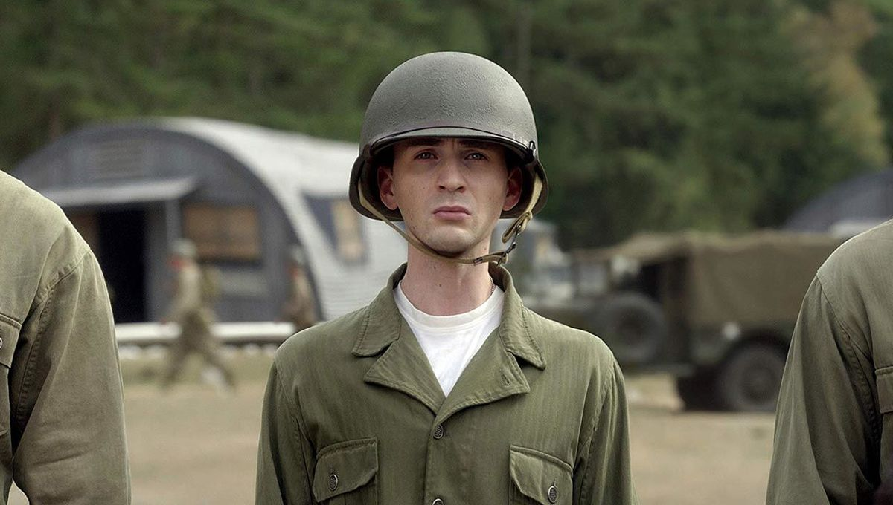
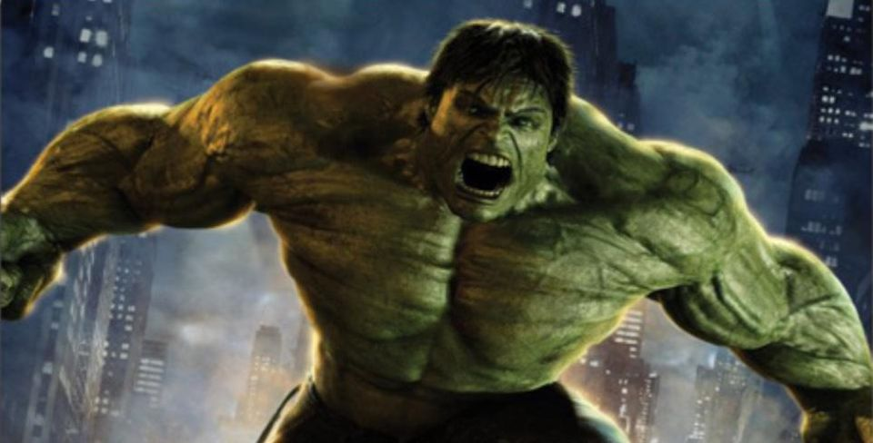
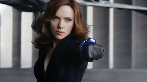
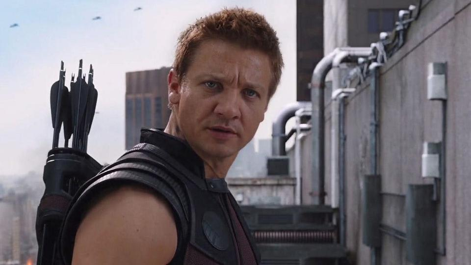
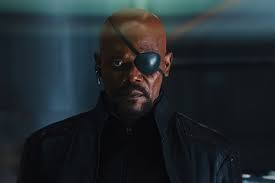

The crown prince of Asgard, based on the Norse mythological deity of the Lightning.
Iron man

A self-described genius, billionaire, playboy, and philanthropist with an electromechanical suit of armor of his own invention.
Captain America

A World War II veteran who was enhanced to the peak of human physicality by an experimental serum and frozen in suspended animation before waking up in the modern world.
Hulk

A genius scientist who, because of exposure to gamma radiation, transforms into a monster when enraged or agitated.
Thor
The crown prince of Asgard, based on the Norse mythological deity of the Lightning.
Black widow

A highly trained spy working for S.H.I.E.L.D.
Hawkeye:

A master archer working as an agent for S.H.I.E.L.D.
Nick Fury

The director of S.H.I.E.L.D. who was revealed to be the one coordinating the "Avengers Initiative" to SAVE THE EARTH from extraterrestial threats after the one like Captain Marvel incident.